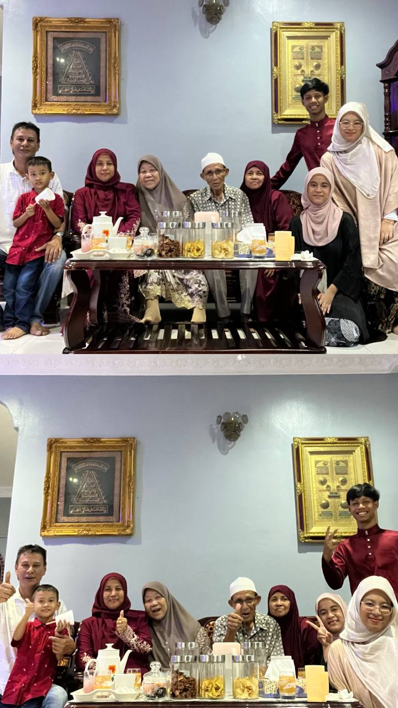
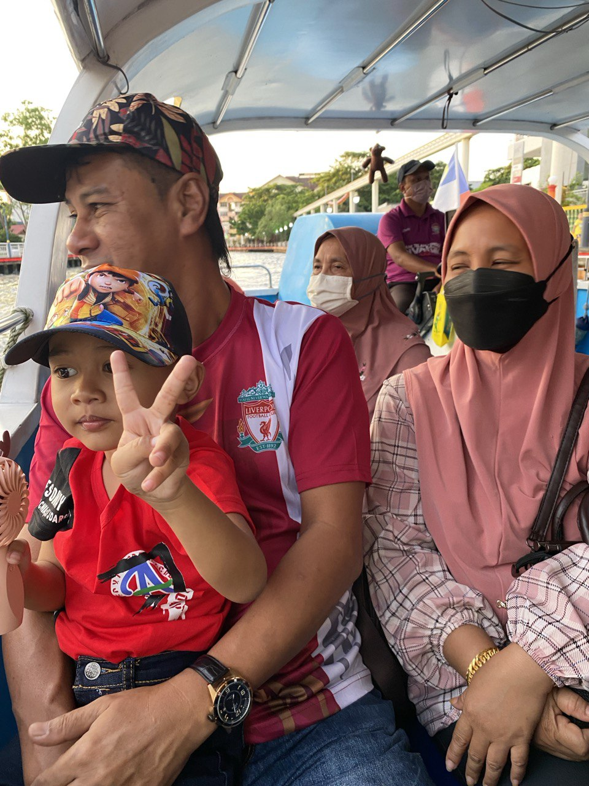
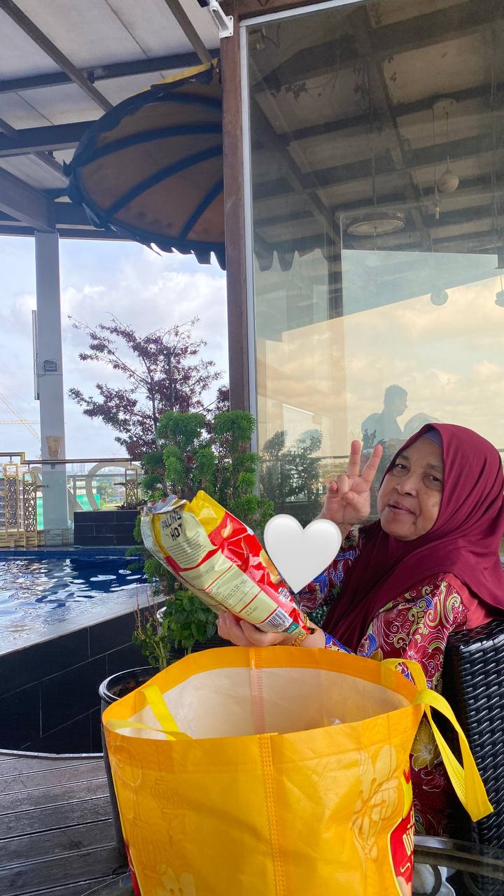
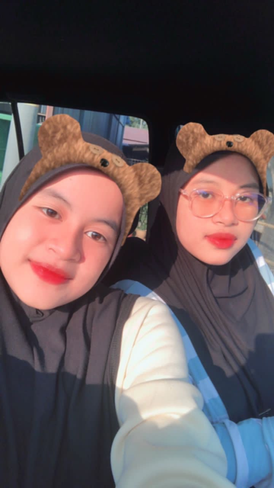
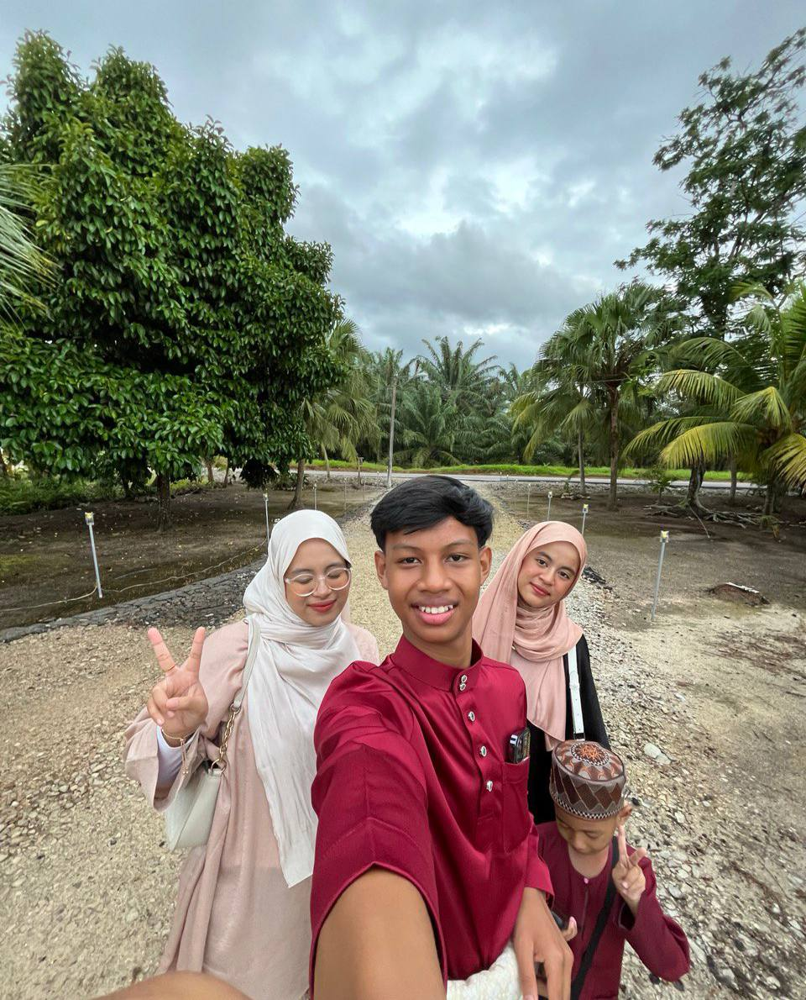
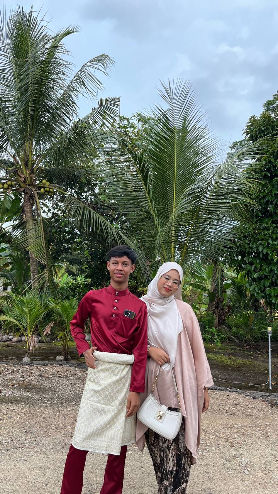

FIZA'S HAPPY PILLS ❤️🩹
My Ayahanda and My Bonda🩷



This is a picture of my mother and father. Actually this picture was taken back to 2021, and I think this was a very cute picture of them. My fathers's name is Rosman Bin Mastor and he was born at Semerah, Batu Pahat. He was born in 2nd Janauary 1968. He got married with my mother in year 2003. My father is self-employed. He was the best father in the world. He such a hard-working man who will do anything for his family. He always giving the best attention to his children. My father never neglected his children. My father can doing anything especially carpentry work. I'm always adoring my father talent in anything he did.
Next is my mother. My mothers's name is Siti Hawa Binti Siis and she was born at Pekan Rengit, Batu Pahat. She was born in year 1978, 27 March. My mom is only a housewife. She is the best mother in the world. She always wanted her children to be a success people. She always give advise to me to study hard and get a Diploma on time, and for sure i will fullfiled my mother's dreams. Not forgetting my mother's cooking is always delicious. No one can't beat it. My parent is a blessed in my life. They might not be perfect, but I love them so much. I want to give the best for them, untill my last breath.
Not forgetting my grandma, her name is Suriah Binti Sapari . My grandma was a javarians, and I loved to hear she speak in java dialect eventhough I'm not understand what she talk about. Same like my mother, my grandma also a champion in cooking skills. She also was an amazing person when she start doing all the tranditional things. Not to mention I was clingy to her too. She never say no to me, which is make me feel so loved.
My Siblings🧸



So this is my siblings, starting off with my first blood brother, Muhammad Amyrul Hafizan Bin Rosman. He was born at Hospital Batu Pahat in year 2007, 28 August. He is 17 years old in this year, so basically he is an SPM candidates. He was very good in sport that make me some kind of jealous.
Next, my one and only little sister which is Nur Allya Maisarrah Binti Rosman. She was born in year 2009, 9th September at Klinik Senggarang. She always loved to eat, especially an instant noodle. She also loved to drawing. She was my forever best friend, and she will always be my mood booster.
Lastly, my younger brother, Muhammad Amyrul Helmyzan Bin Rosman. He is 7 years old and was born at Hospital Sultanah Aminah, Batu Pahat. He was born in 12 December 2012. He is the youngest and a spoiled one. He was too clingy sometimes, but never mind, i can handle him very well, and he also got a nicknamed, which is Ijan! As for me, my family is a reason why I become a good person today.
|